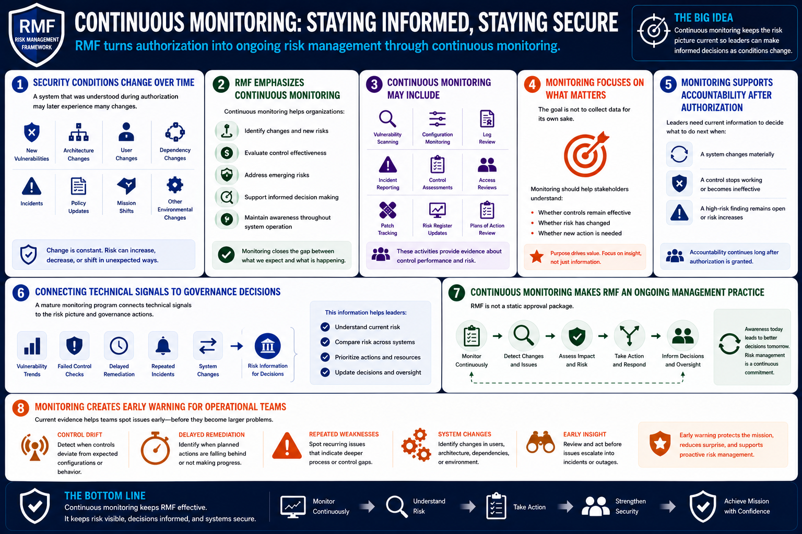

What Is RMF?
Continuous Monitoring
Connecting to LMS... Progress: in progress
Version 1.0 | Date: 2026-06-16 | Educational overview of Risk Management Framework concepts.

Narration
Security conditions change over time. A system that was understood during authorization may later experience new vulnerabilities, architecture changes, user changes, dependency changes, incidents, policy updates, or shifts in mission importance.
RMF emphasizes continuous monitoring so organizations can identify changes, evaluate control effectiveness, address emerging risks, and support informed decision making throughout system operation.
Continuous monitoring may include vulnerability scanning, configuration monitoring, log review, incident reporting, control assessments, access reviews, patch tracking, risk register updates, and review of plans of action.
The goal is not to collect data for its own sake. Monitoring should help stakeholders understand whether controls remain effective, whether risk has changed, and whether new action is needed.
Monitoring also supports accountability after authorization. If a system changes materially, if a control stops working, or if a high-risk finding remains open, leaders need current information to decide what to do next.
A mature monitoring program connects technical signals to governance decisions. For example, vulnerability trends, failed control checks, delayed remediation, or repeated incidents can all become risk information.
Continuous monitoring makes RMF an ongoing management practice rather than a static approval package. It keeps the organization aware of current conditions and helps risk decisions evolve with the system.
For operational teams, monitoring also creates early warning. Current evidence can reveal control drift, delayed remediation, repeated weaknesses, or system changes that should be reviewed before they become larger issues.